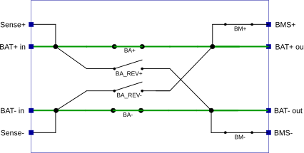
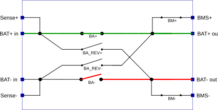
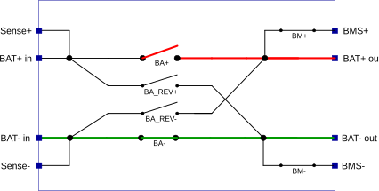
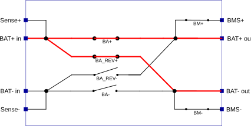
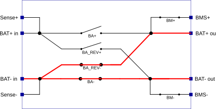
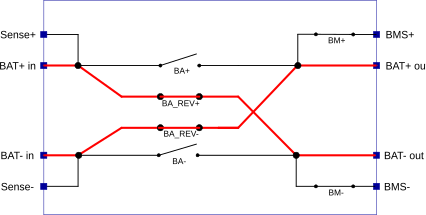

FIU Usage Notes
FIU Usage Notes — Usage information about the Fault Insertion Unit
Overview
![[Note]](images/note.png) | Note |
|---|---|
This documentation refers to the Speedgoat Battery Management Testing Systems (BMTS) that are supported with MATLAB R2022a and later. |
The BMTS driver block library allows users to configure and operate the Battery Cell Emulator (BCE), Fault Insertion Unit (FIU), and Temperature Sensor Emulator (TSE) with a Speedgoat real-time target machine. These usage notes cover additional topics about using the BMTS driver blocks with the FIU. For hardware-related topics, such as setup and safety instructions, please refer to the respective documents provided with each product.
Bus Signal Structure
The BMTS Read and BMTS Write blocks use Simulink bus signals as inputs/outputs. The structure of the bus signal depends on the configured device.
The Simulink Bus structures are allocated in the MATLAB base workspace once the parameters for the BMTS Setup, BMTS Read and BMTS Write blocks have been defined. The bus structure for each FIU device depends on the number of channels present in the device.
The bus structure to set the values of a 12-channel FIU device is called FIU_12Ch_Set and is as follows:
- FIU_12Ch_Set
FIU_Ch1, FIU_Ch2, […], FIU_Ch12
FaultState: Set the fault state inserted by the channel. Data type: uint8
SensePlusBroken: Break the battery sense line on the plus side. Data type: boolean
SenseMinusBroken: Break the battery sense line on the minus side. Data type: boolean
The FaultState signal is of type uint8 and can range from 0 to 5:

FaultState = 0: No Fault
FaultState = 1: BAT- broken
FaultState = 2: BAT+ broken
FaultState = 3: BAT+ short
FaultState = 4: BAT- short
FaultState = 5: Polarity Inversion
The SensePlusBroken and SenseMinusBroken signals are of type boolean and control the interruption of the corresponding sense line. This is independent of the FaultState setting.
SensePlusBroken = true
SenseMinusBroken = true
| Note |
|---|---|
When switching between fault states, the respective FIU channel first opens the four main relays (BA+, BA_REV+, BA_REV-, BA-) for 20ms before applying the new state. This ensures electrical safety and prevents potential shorts during transient states. |
The bus structure to receive data from a 12-channel FIU device is called FIU_12Ch_Get and is as follows:
- FIU_12Ch_Get
FIU_Ch1, FIU_Ch2, […], FIU_Ch12
Status: Provides status information about the FIU channel. Data type: uint8
The Status signal is of type uint8. Bits 0-5 indicate the switch states of the six relays of the corresponding FIU channel. Bit 6 indicates an error state:
| Bit | Relay |
|---|---|
| 6 | Interlock inactive / error |
| 5 | BM- |
| 4 | BA_REV+ |
| 3 | BA+ |
| 2 | BM+ |
| 1 | BA- |
| 0 | BA_REV- |
A bit value of 0 indicates that the relay is in its default state, as illustrated by the "No Fault" state above.
A bit value of 1 indicates that the relay is in its fault state, as opposed to being in the "No Fault" state.
Assigning Bus Signals
There are various ways to handle bus signals in Simulink. One option is to use the BMTS Bus Pack block block; this workflow is explained below. For other workflows, please refer to the MathWorks documentation.
Insert a BMTS Bus Pack block and connect it to the BMTS Write block. In the block mask of the BMTS Bus Pack block, select the correct BMTS device type from the dropdown menu. The corresponding Simulink Bus object is automatically allocated in the MATLAB base workspace.
By default, input ports are created for all signals inside the bus. To select only a subset of signals and reduce the number of input ports, use the tree view on the Signal Selection tab of the block mask.